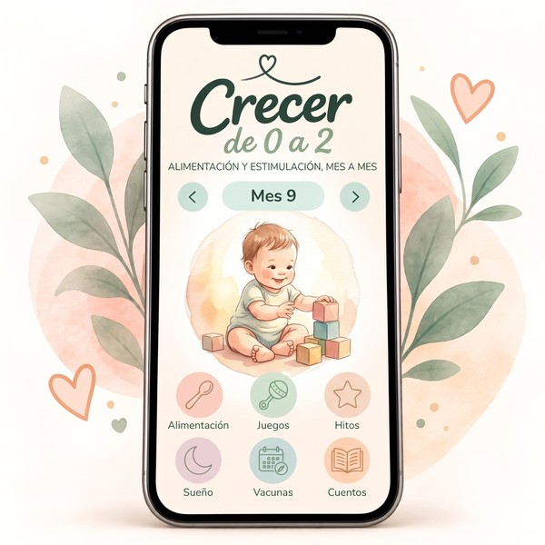

“¿Qué le doy de comer ahora?”
Con cada etapa cambian las texturas, las porciones y las necesidades. Tener referencias organizadas por edad ayuda a planificar sin empezar la búsqueda desde cero.
Alimentación, juegos, sueño, hitos y rutinas: acompañar cada etapa puede traer muchas preguntas. Crecer de 0 a 2 reúne información y herramientas prácticas para que tengas una orientación organizada, mes a mes, en un solo lugar.
Quiero acceder a Crecer de 0 a 2 →
Contenido general y educativo para acompañar la crianza. No reemplaza el seguimiento de tu pediatra.

Es fácil encontrar información suelta. Lo difícil suele ser ubicarla en la etapa que estás viviendo y convertirla en algo útil para el día a día.
Con cada etapa cambian las texturas, las porciones y las necesidades. Tener referencias organizadas por edad ayuda a planificar sin empezar la búsqueda desde cero.
No hace falta llenar la casa de juguetes. A veces necesitás una idea sencilla, adecuada para su momento de desarrollo y que puedas hacer con lo que ya tenés.
Los hitos, el sueño y las rutinas despiertan dudas. Contar con listas y registros te permite observar cambios y conversar con el pediatra con más información.
Entrá a la etapa que estás transitando y encontrá contenidos para orientarte. La app reúne ideas, guías y herramientas para acompañar el crecimiento sin convertir cada día en una lista interminable de tareas.
Quiero tenerla conmigo →Crecer de 0 a 2 combina contenidos educativos con recursos prácticos para que puedas consultar, registrar y volver a mirar cuando lo necesites.
Orientación desde la lactancia y el inicio de la alimentación complementaria, menú semanal, lista de compras y recetario con filtros por edad e ingredientes.
Propuestas de juego y actividades acordes a distintas etapas, con un plan que presenta una actividad nueva para acompañar cada día.
Listas de habilidades por edad para observar avances, llevar un seguimiento y tener puntos concretos para conversar en los controles.
Información sobre descanso, hábitos y pantallas, además de sonidos relajantes y recursos para acompañar los momentos de sueño.
Anotá tomas o comidas, horas de sueño, minutos de juego, alimentos nuevos y cómo te sentís. Consultá datos orientativos según la edad.
Calendario de vacunación de referencia para Argentina, guías temáticas y biblioteca de cuentos y canciones para compartir.
La propuesta es acompañar el crecimiento desde los primeros meses, con contenidos que podés consultar según la edad y las necesidades de tu bebé.
Lactancia, adaptación, vínculo, cuidado cotidiano, sueño seguro y primeros estímulos a través de la voz, el contacto y el juego.
Alimentación complementaria, nuevas texturas, exploración, movimiento, juegos sensoriales y observación de hitos.
Comidas familiares adaptadas, lenguaje, primeros pasos, juego, rutinas y acompañamiento de nuevas habilidades.
Más comunicación, juego simbólico, movimiento, hábitos y herramientas para seguir observando su desarrollo.
“No necesito tener todas las respuestas hoy. Necesito información clara para acompañar a mi bebé, paso a paso, en la etapa que estamos viviendo.”
Una idea que resume el propósito de Crecer de 0 a 2.
Tené a mano contenidos sobre alimentación, juegos, sueño, desarrollo y seguimiento. Consultalos a tu ritmo y volvé a ellos cada vez que aparezca una nueva pregunta.
Importante: Crecer de 0 a 2 ofrece información general y educativa. No reemplaza la consulta con tu pediatra ni con otros profesionales de la salud.